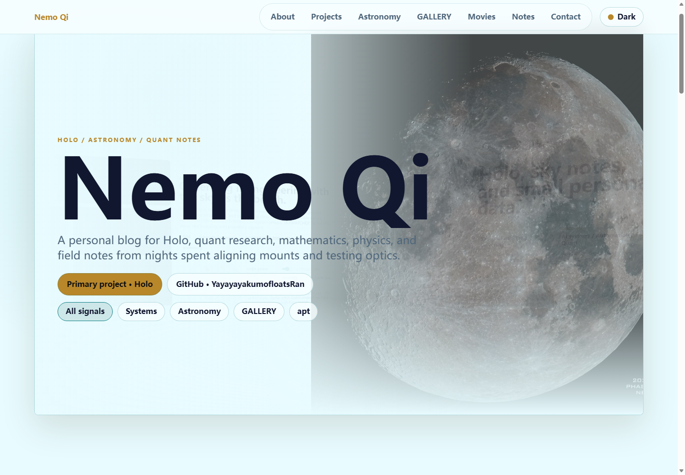
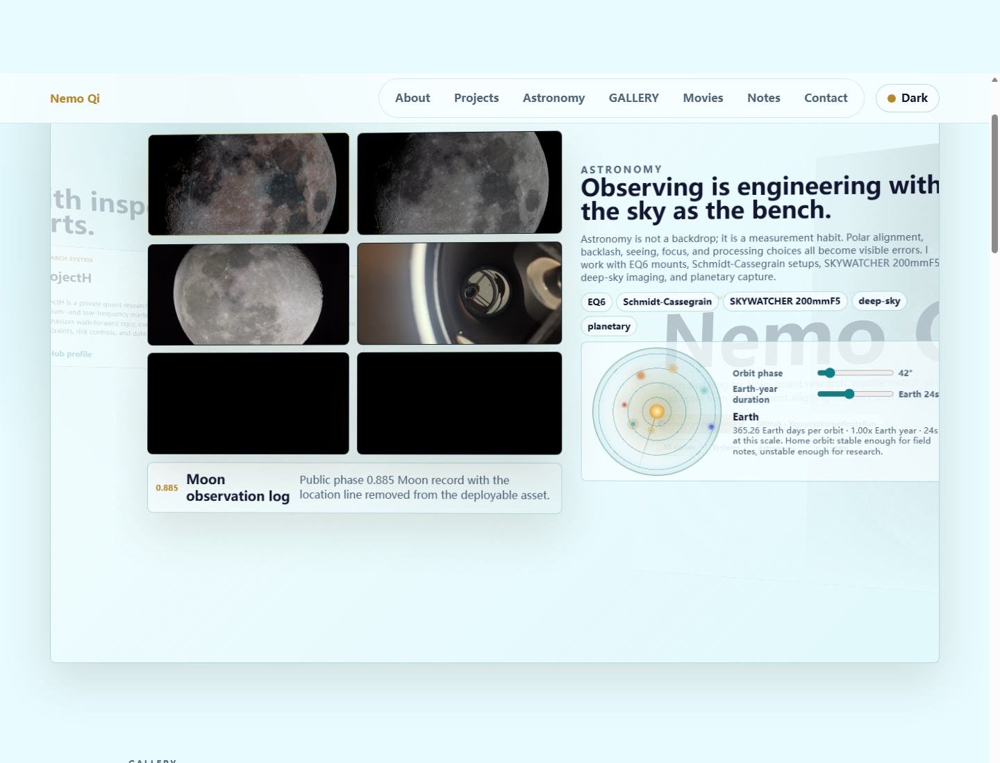
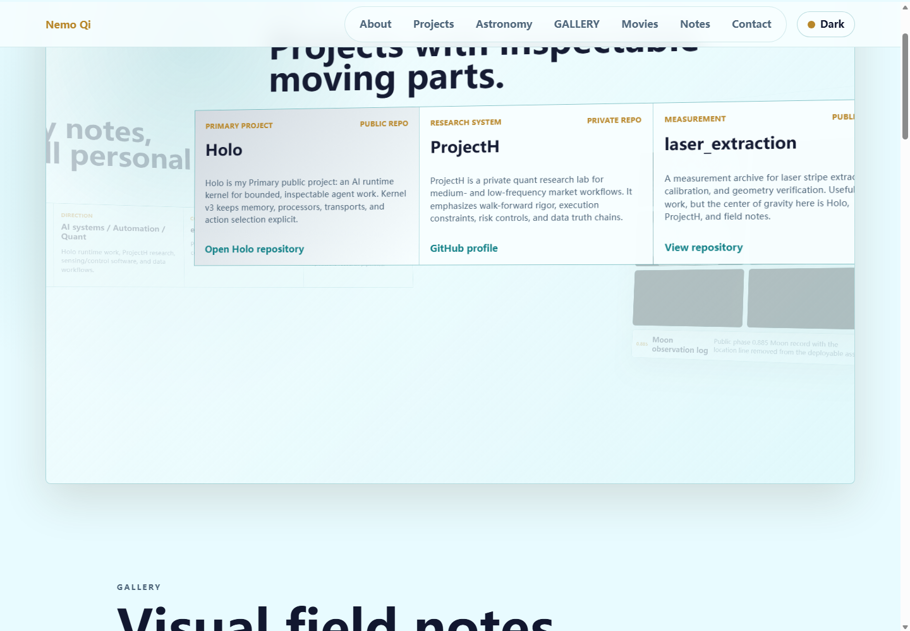
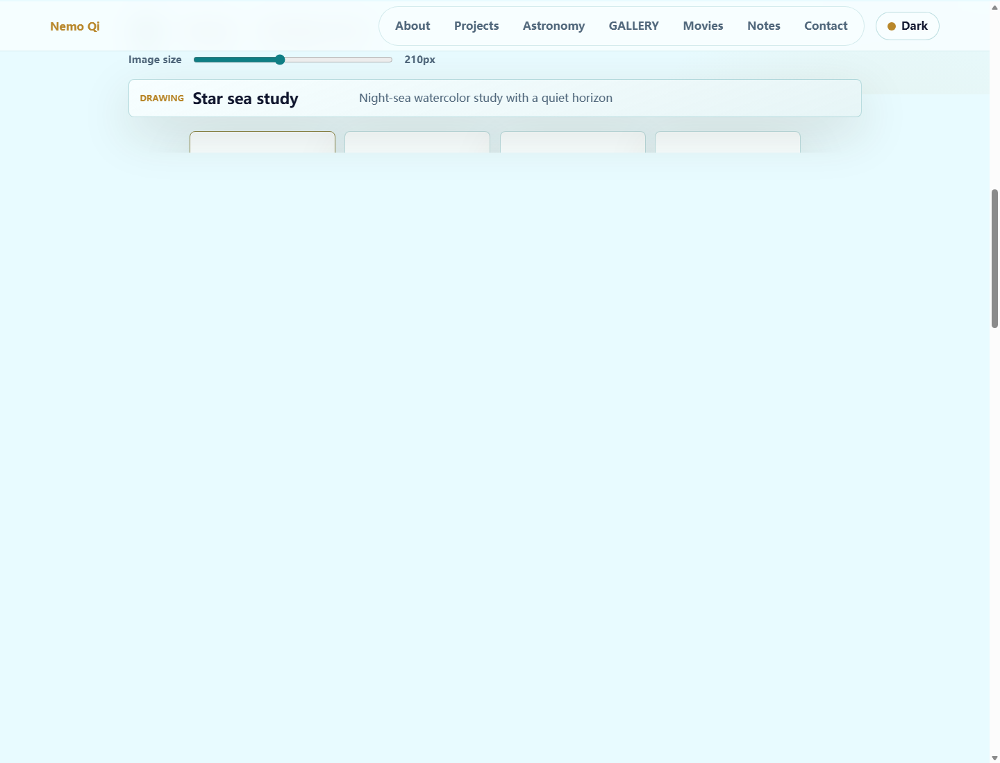
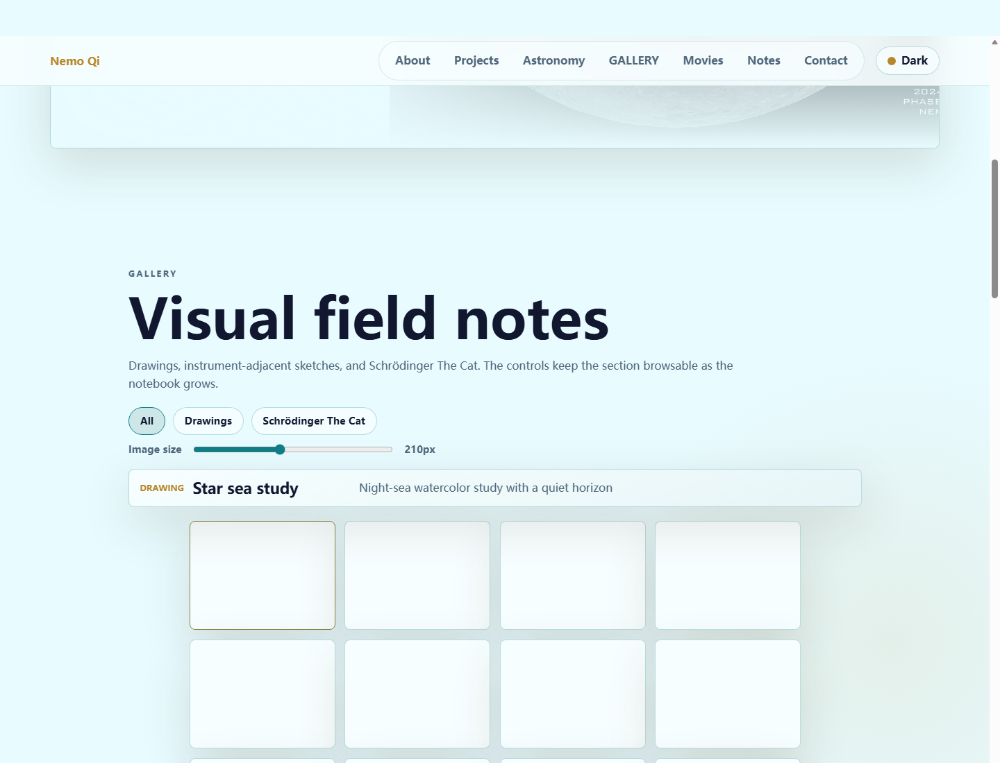

基于 Vibe Coding 的个人主页设计与实现
（上海交通大学 智能感知工程 enhancednemoqi@outlook.com）
摘要 本报告记录一次使用 Codex 完成个人主页的 Vibe Coding 实践。页面以 Holo 作为技术主线，以天文观测作为视觉主线，并用 favourite movies 完成真实小数据展示。实现采用静态 HTML/CSS/JS。首屏使用横向 3D 卡片，后续内容回到纵向阅读。报告重点说明需求拆解，页面实现，Prompt 修正过程和踩坑复盘。
关键词 Vibe Coding；个人主页；Holo；天文观测；Prompt 工程
1 引言
课程作业要求使用 Vibe Coding 完成一个能体现个人特征的主页。页面需要包含自我介绍，真实小数据展示和一个可以触发的交互彩蛋，还要提交成品截图，设计说明，关键 Prompt 记录和踩坑复盘。笔者将这个要求理解为一次小型前端作品实践：页面要能打开，内容要真实，交互要有自己的判断，最后还要能说明 AI 在哪里帮到了我，哪里需要我重新把方向拉回来。
本项目以个人 blog 作为网页形态。页面主线放在 Holo，天文观测和数理兴趣上。Holo 是公开项目，天文图像和设备照片来自个人素材，电影偏好作为真实小数据。页面只使用公开身份 Nemo Qi，保留学校，专业方向，邮箱和 GitHub 指路，头像和过于私人的内容不进入页面。成品部署在 GitHub Pages，访问地址为 https://yayayayakumofloatsran.github.io/。

2 需求拆解与设计边界
作业说明中最关键的三个区域是自我介绍，数据可视化和交互彩蛋。我的处理方式是让 About 承担身份说明，让 Movies 承担真实小数据展示，让主题切换，横向 deck，太阳系控件，图片预览和 apt 彩蛋共同承担交互。这样安排后，页面不会停留在静态简历层面，也不会把私人信息暴露到公网。
视觉边界也在迭代中逐步收紧。用户头像被删除，月球图片中的地点信息经过公开化处理，画作中的个人签名也做了弱化。主页默认使用浅青色背景，深色模式使用靛蓝和青色，金色只用于细线和重点边框。这个选择既保留天文主题，又避免页面变成沉重的黑色展板。
3 页面结构与视觉方案
页面分为两段。第一段是横向 3D deck，包含 Intro，About，Projects 和 Astronomy 四张卡片。卡片使用显式边缘按钮翻页，鼠标滚轮留给纵向阅读。这个调整来自实际体验：滚轮翻页会破坏阅读节奏，也会让卡片难以停在屏幕中央。第二段从 Gallery 开始恢复传统纵向阅读，用于放置绘画素材，电影数据，Notes 和 Contact。
首屏使用月球图像作为视觉锚点。Astronomy 区展示月面，SKYWATCHER 200mm F5 牛顿反射镜，极轴镜视角和太阳系控件。Gallery 和 Movies 使用同一套图片卡片与 inspector 说明区，文字不直接压在图片上。这样能保证图片本身干净，访问者停留或点击时再获得解释。

4 核心实现
项目采用纯静态实现，核心文件是 site/index.html，site/styles.css 和 site/script.js。这种结构不依赖构建工具，便于课程提交，也便于 GitHub Pages 直接发布。部署时曾出现图片加载失败，排查后发现发布目录和资源路径不一致，随后将 site 目录作为 Pages 输出源，并保留根目录跳转文件，图片路径才稳定下来。
交互逻辑被拆成几个小模块。主题切换通过 data-theme 保存状态，横向 deck 只响应左右按钮，图片预览使用统一 lightbox，Movies 区根据电影主题统计生成条形图，Astronomy 区的太阳系控件按行星公转周期比例调整速度。这里没有追求复杂框架，重点放在可读，稳定和容易继续手工修改。

5 Holo 项目说明
Holo 是我的主要公开项目。公开 README 将它定义为一个 experimental subject-runtime host，用于围绕 durable local state，replaceable processors 和 transport shells 构建 bounded, inspectable conversational agent。公开仓库只保留 generic runtime kernel，测试和文档，不包含私人 profile，长期记忆，运行数据库，传输回执和 canary artifacts。
主页中的 Holo 介绍保持简短。Projects 区只说明它是一个可检查的 AI runtime kernel，并点出 memory，processor，transport，action selection 和 acceptance gates 这些公开架构线索。README 里的 offline bionic kernel probe 已推进到 Stage35 到 Stage39，这说明 kernel v3 已经经历多轮迭代。页面因此把 Holo 放在 primary project 位置，laser_extraction 只作为次要公开项目保留。
6 真实小数据：Favourite Movies
作业要求一份真实属于自己的小数据。这里选用 favourite movies，因为它既真实，又能解释个人趣味。数据包括 Contact，1900，Gifted，Interstellar，The King's Speech，Batman Dark Knight，Puss in Boots 和 Ford v. Ferrari。页面没有调用外部海报接口，优先使用本地素材中已经整理好的电影图片，保证提交包离线打开时仍能显示。
可视化采用主题计数。Space 覆盖 Contact 和 Interstellar，Mind 覆盖 Gifted 和 The King's Speech，Myth 覆盖 Batman Dark Knight 和 Puss in Boots，Music 对应 1900，Velocity 对应 Ford v. Ferrari。这个结果和主页整体气质一致：一部分兴趣指向宇宙和数理，一部分兴趣指向叙事，表达和工程判断。

7 Prompt 工程过程
第一轮 Prompt 只要求制作个人主页，并参考附件。AI 很快生成了可运行框架，但页面像普通作品集，缺少个人主题。随后我补充了 GitHub 链接，深浅主题，blog 定位和 Holo 的优先级。AI 的输出开始转向个人 blog，Projects 区也从 laser_extraction 调整到 Holo。
第二轮 Prompt 主要解决视觉。加入月球图，天文设备，绘画素材，电影素材后，AI 先把文字压在图片上，观感比较粗糙。后续我要求说明移动到侧栏或上下方，图片点击后弹出大图，并统一 Gallery 和 Movies 的比例。AI 最终把说明区改成 inspector，图片展示变得干净。
第三轮 Prompt 主要解决交互和性能。横向 deck 起初可以被滚轮触发，浏览时容易卡住。根据反馈，AI 将 deck 改为只由边缘按钮控制，并降低透明层和动画负担。太阳系控件一开始像装饰性小游戏，后来按真实公转周期比例重写速度关系，同时把边缘行星遮挡问题修正。
报告阶段也经历了一次明显修正。早期报告更像网页说明和表格汇总，缺少论文格式。根据用户提供的往期 TeX 模板，最终报告改为 A4 页面，2.54cm 边距，宋体正文，黑体标题，首行缩进 2em，并删除表格，把说明改成连续论述。

8 踩坑复盘
第一类问题是隐私边界。AI 倾向于把个人主页写得更完整，也容易保留头像占位，地点标注和签名信息。后续通过明确指令删除头像，限制公开身份，并对图片做像素处理，页面才适合放到公网。这个问题说明，公开页面的素材选择不能只看好不好看，还要检查图像里是否带有额外信息。
第二类问题是交互节奏。横向 deck 的视觉效果很好，但滚轮触发后会干扰纵向浏览。解决方法是把卡片翻页改为显式按钮，并让按钮在未触碰时近似隐形。这样保留了横向切页的立体感，也让传统阅读不受影响。
第三类问题是报告格式。AI 生成网页和 PDF 时容易走向彩色化和组件化，这与课程论文模板不一致。最后的处理方式是回到参考 TeX，逐项对齐字体，字号，行距，页边距和首行缩进。若重新开始，我会在第一轮 Prompt 中直接写入评分标准，公开边界，提交文件格式和报告模板，减少后期返工。
9 总结
本次作业完成了一个可部署的个人主页。页面用 Holo 建立技术主线，用天文素材建立视觉主线，用 favourite movies 完成真实小数据展示，并用主题切换，横向 deck，太阳系控件，图片预览和 apt 彩蛋补足交互。
这次实践也让我更清楚地看到 Vibe Coding 的分工。AI 适合快速搭建结构，补齐样式和实现交互；人的工作是不断收紧边界，判断审美，检查隐私，并把作品重新拉回作业要求。最终版本仍然保留可继续手工修改的空间，后续可以把 Notes 扩展成真正的 blog 内容。